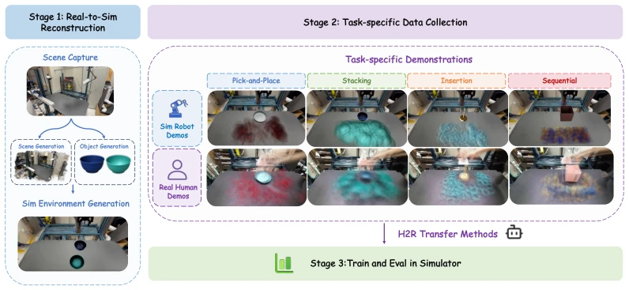
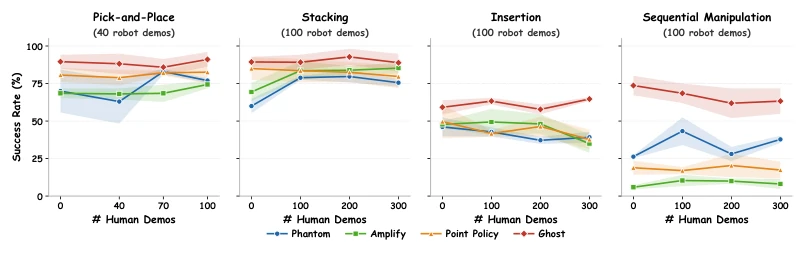
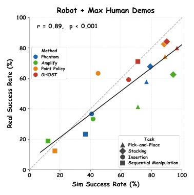
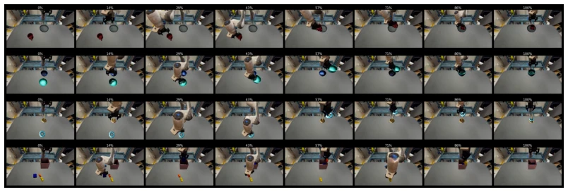
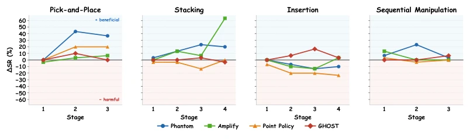
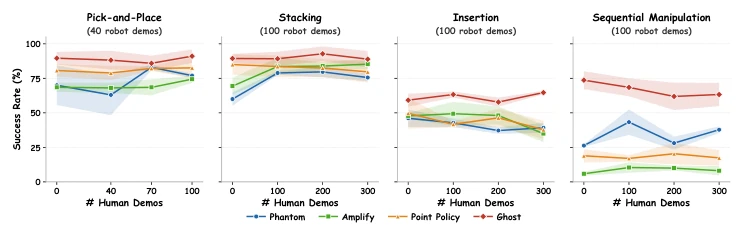
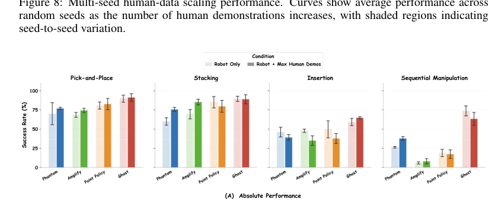
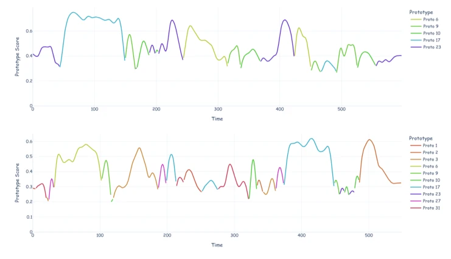

Figure 1: H2RBench overview. We propose a real-to-sim benchmark for evaluating human-to-robot (H2R) policy transfer from real human video demonstrations. H2RBench benchmarks multiple H2R methods across four manipulation tasks, enabling systematic analysis of human-data scaling. More videos are available on our anonymized project website.
方法Method
H2RBench 采用三阶段流程。第一阶段是 Real-to-Sim 重建，利用 PolaRiS [20] 框架结合 Marble 生成高质量 3D 网格和高斯泼溅重建，确保仿真场景与真实世界几何一致。第二阶段是数据收集，每个任务包含真实人类视频（第三人称固定视角）和仿真/真实机器人演示（Franka Panda 机械臂）。第三阶段是训练与评估，在 Isaac Lab 仿真器中统一训练协议。基准包含四个任务：Pick-and-Place、Stacking、Insertion、Sequential Manipulation，覆盖不同精度和时长需求。评估了四种代表性 H2R 方法：Phantom 通过图像修复对齐视觉；Point Policy 使用共享 3D 关键点；AMPLIFY 学习潜在动态；GHOST 采用分层子目标。关键设计在于固定机器人演示预算（如 40 或 100 条），仅增加人类演示数量以分析扩展性。评估指标包括多阶段成功率，并额外训练真实世界策略以验证 Sim-vs-Real 相关性。
—

Figure 2: Overview of the H2RBench evaluation pipeline. We reconstruct real-world workspaces into Isaac Lab simulation environments and collect task-specific human and robot demonstrations across four manipulation tasks with diverse object placement distributions. Methods are then trained and evaluated in simulation under a shared benchmark protocol for controlled H2R comparison.
Figure 3: Capability and human transfer impact across H2R methods and tasks. Left: absolute task performance. Right: human transfer impact (log-odds gain)

Figure 4: Scaling performance with respect to the number of human demonstrations.

Figure 5: Sim-vs.-Real correlation between simulated and real-world policy performance.
其他图片Other Figures

Figure 6: Visualization of the task progression for each task. We show representative intermediate states from the initial scene configuration to successful task completion.

Figure 7: Stage-wise human transfer impact measured as ∆SRs = SRR+H s −SRR s . Positive values indicate that adding human demonstrations improves stage completion, while negative values indi- cate degraded performance.

Figure 8: Multi-seed human-data scaling performance. Curves show average performance across random seeds as the number of human demonstrations increases, with shaded regions indicating seed-to-seed variation.

Figure 9: Multi-seed absolute performance comparison across H2R methods and tasks. Hatched bars indicate robot-only training; solid bars indicate robot + maximum human demonstrations. Error bars show standard deviation across random seeds.

Figure 10: Encoded prototype scores of random selected demonstration from sequential manipula- tion task. Different colors represent different prototypes. For visual clarity, only the prototype with the highest score at each time step is plotted. Up: human demo. Down: robot demo.